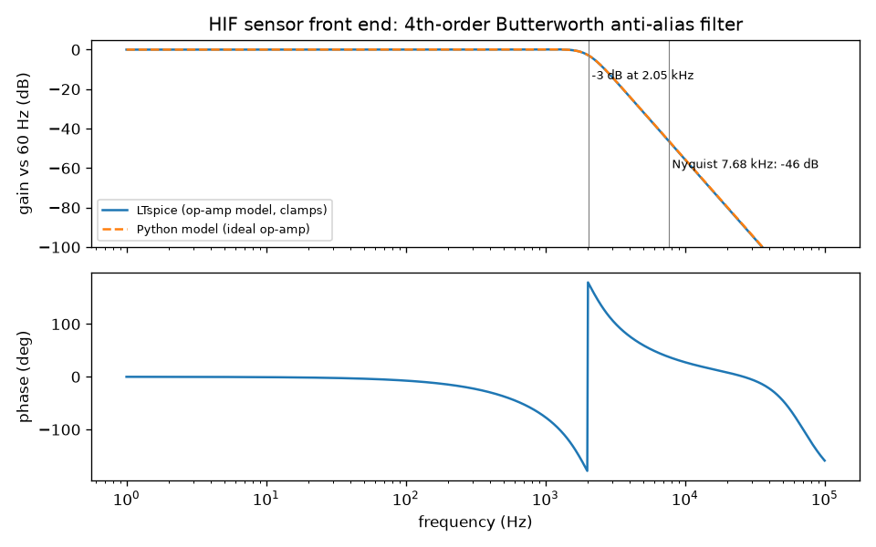
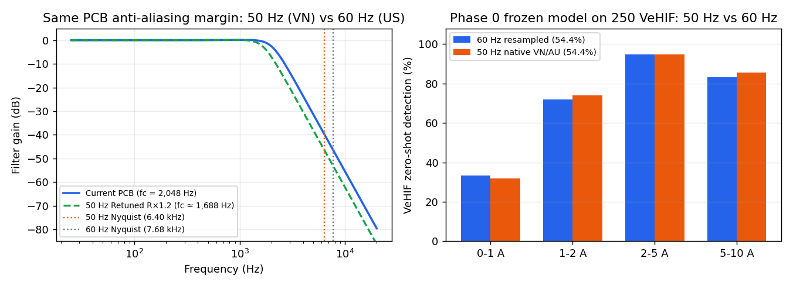
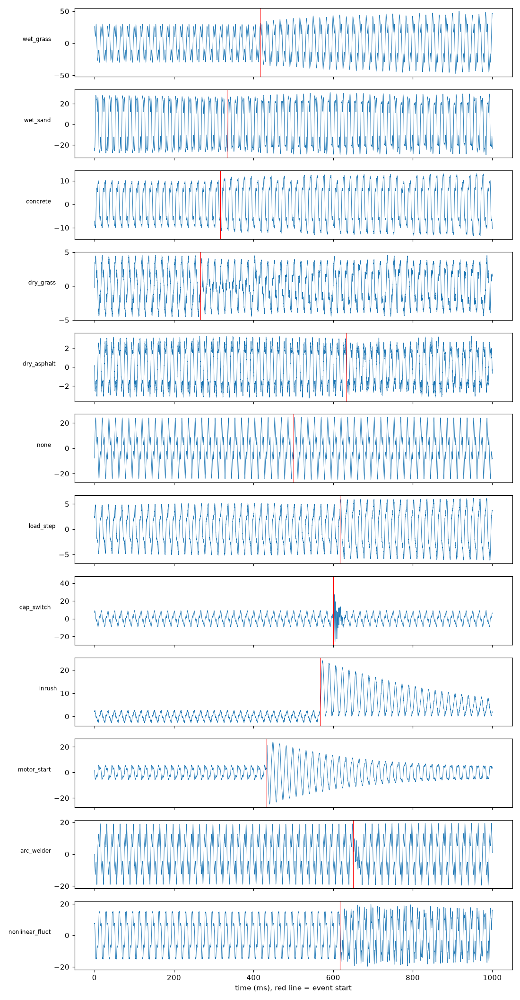
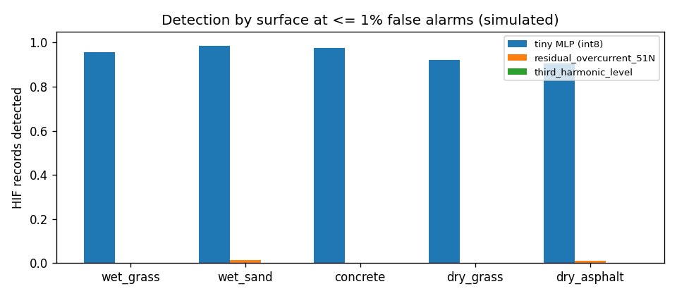
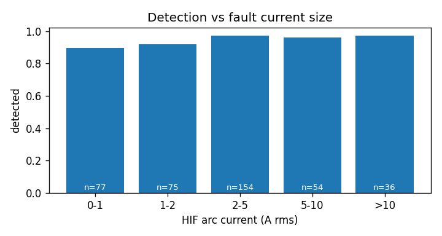
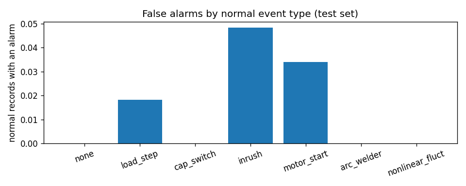
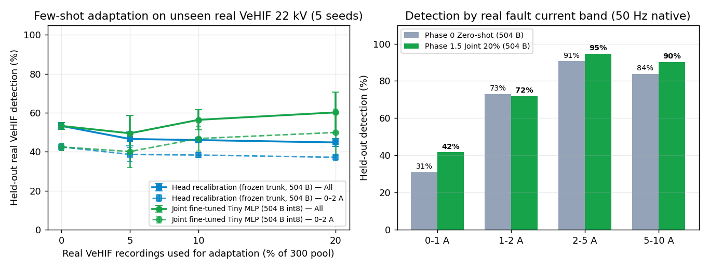
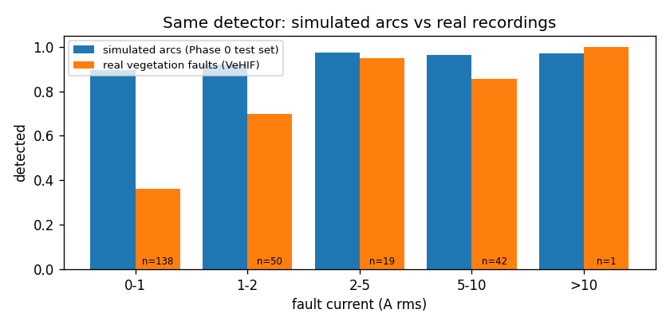
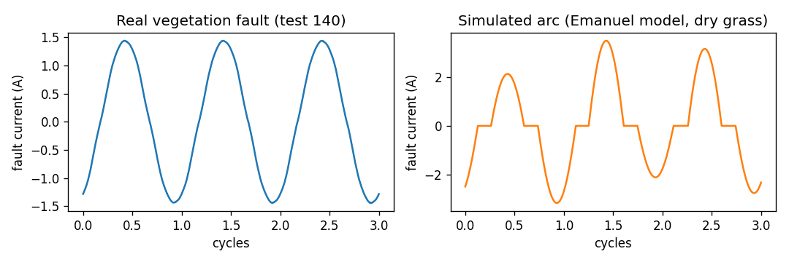
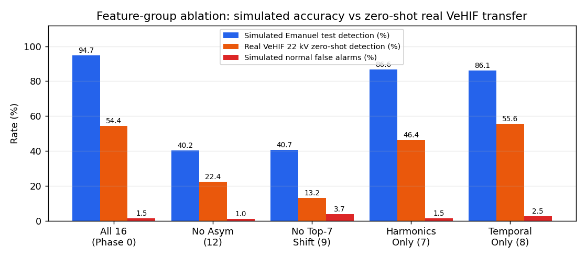

Tier 1 · Edge High-Impedance Fault Sensor (ESP32-S3)Tầng 1 · Cảm biến biên phát hiện sự cố trở kháng cao (ESP32-S3)
Clamp-CT analog front end (LTspice) + 504 B int8 neural network, validated on 4,000 simulated arcs, real 22 kV 50 Hz VeHIF vegetation-fault recordings, and GCC C bit-parity tests.Mạch kẹp CT chống răng cưa (LTspice) + mạng nơ-ron int8 504 B, kiểm chứng trên 4.000 hồ quang mô phỏng, dữ liệu đo thật VeHIF 22 kV 50 Hz và kiểm tra khớp bit code C bằng GCC.
1 · Analog Front End & 50 Hz (Vietnam) vs 60 Hz (US)1 · Mạch đầu vào Analog & Lưới 50 Hz (Việt Nam) vs 60 Hz (Mỹ)
Key result: LTspice 26.1.1 verified −3 dB at 2045.1 Hz, −46.4 dB at 60 Hz Nyquist, and clean ADC swing 1.043–2.257 V. On Vietnam 50 Hz grids (12.8 kHz ADC), keeping the PCB yields −40.0 dB at Nyquist; scaling two resistors ×1.2 restores −46.7 dB.Kết luận nhanh: LTspice 26.1.1 xác nhận tần số cắt 2045.1 Hz, chống răng cưa −46.4 dB ở 60 Hz, chân ADC sạch 1.043–2.257 V. Với lưới 50 Hz Việt Nam (12.8 kHz), giữ nguyên PCB đạt −40.0 dB; đổi 2 điện trở ×1.2 khôi phục lại −46.7 dB.
| Grid / Hardware ModeChế độ lưới / Phần cứng | FS_ADC | Nyquist | f (−3 dB) | Nyquist | Phase | Harmonics | Window |
|---|---|---|---|---|---|---|---|
| 60 Hz US (Current PCB, LTspice)60 Hz Mỹ (Mạch hiện tại, LTspice) | 15,360 Hz | 7,680 Hz | 2,047.9 Hz | −46.34 dB | 4.37° | 1..34 | 133.3 ms |
| 50 Hz Vietnam / VeHIF (Same PCB)50 Hz Việt Nam / VeHIF (Giữ nguyên mạch) | 12,800 Hz | 6,400 Hz | 2,047.9 Hz | −39.99 dB | 3.64° | 1..40 | 160.0 ms |
| 50 Hz Vietnam (Retuned R×1.2)50 Hz Việt Nam (Đổi 2 điện trở R×1.2) | 12,800 Hz | 6,400 Hz | 1,688.7 Hz | −46.70 dB | 4.41° | 1..33 | 160.0 ms |
Bode plot & paired 50 Hz vs 60 Hz VeHIF chartsXem biểu đồ Bode LTspice & so sánh 50 Hz vs 60 HzLTspice vs Python agreement (< 0.1 dB) and 50 Hz native evaluation.Khớp LTspice vs Python (< 0.1 dB) và đánh giá trực tiếp ở 50 Hz.LTspiceExpandXem chi tiết

Paired 250-recording VeHIF test: 60 Hz resampled 54.4% vs 50 Hz native VN/AU 54.4%.So sánh đối cặp 250 bản ghi VeHIF: 60 Hz resample 54.4% so với 50 Hz gốc VN/Úc 54.4%.

2 · Phase 0: Simulated Emanuel Arcs (504 B int8 vs Baselines)2 · Phase 0: Mô phỏng hồ quang Emanuel (504 B int8 vs Cơ sở)
Key result: Across 4,000 simulated events (1% val FA budget, 3-window persistence), Tiny MLP int8 detects 94.7% (FA 1.5%) vs 51N 0.5% and 3rd harmonic 0.0% — and holds 93.0–98.5% on unseen surfaces.Kết luận nhanh: Trên 4.000 sự kiện mô phỏng (giới hạn 1% FA, duy trì 3 cửa sổ), Tiny MLP int8 phát hiện 94.7% (FA 1.5%) so với 51N 0.5% và hài bậc 3 0.0% — giữ 93.0–98.5% trên bề mặt chưa từng học.
| Ground SurfaceBề mặt chạm đất | Tiny MLP (int8) | Leave-One-Surface-Out | 51N | 3rd Harm. |
|---|---|---|---|---|
wet_grass | 95.5% | 98.5% | 0.0% | 0.0% |
wet_sand | 98.5% | 98.5% | 1.5% | 0.0% |
concrete | 97.7% | 97.7% | 0.0% | 0.0% |
dry_grass | 92.3% | 93.4% | 0.0% | 0.0% |
dry_asphalt | 90.7% | 93.0% | 1.2% | 0.0% |
Phase 0 charts & unseen arc-welder stress test (4 figures)Xem 4 biểu đồ Phase 0 & thử nghiệm máy hàn chưa từng thấyWaveforms, surface breakdown, current bands, and disturbance false alarms.Dạng sóng mẫu, biểu đồ theo bề mặt, dải dòng và báo nhầm từng loại nhiễu.ExpandXem chi tiết
Honest hard-negative stress test: when arc_welder is withheld from training, its false-alarm rate rises from 0.0% (seen) to 17.5% (unseen).Kiểm thử trung thực với nhiễu khó chưa từng thấy: giấu arc_welder khi train làm báo nhầm tăng từ 0.0% lên 17.5%.




3 · Real VeHIF 22 kV Recordings (Phase 1 Zero-Shot → Phase 1.5 Adaptation)3 · Dữ liệu đo thật VeHIF 22 kV (Phase 1 Zero-Shot → Phase 1.5 Thích ứng)
Key finding: Evaluated zero-shot on 250 real 22 kV 50 Hz tree-contact recordings (VeHIF, CC0), the frozen Phase-0 model drops from 94.7% to 56.0% (0.0% alarms on all 53 real background recordings), mainly in 0–2 A because real vegetation arcs are much more symmetric (dc_ratio −0.49 IQR, h2_ratio −0.47 IQR).Phát hiện cốt lõi: Khi chạy zero-shot trên 250 bản ghi chạm cây thật 22 kV 50 Hz (VeHIF, CC0), model Phase 0 giảm từ 94.7% xuống 56.0% (0.0% báo nhầm trên cả 53 bản ghi nền), chủ yếu ở dải 0–2 A do hồ quang cây thật đối xứng hơn nhiều (dc_ratio −0.49 IQR, h2_ratio −0.47 IQR).
| Fault Current BandDải dòng sự cố | Phase 0 SimPhase 0 Mô phỏng | Phase 1 Real 0-ShotPhase 1 Thật 0-Shot | Phase 1.5 Adapted (20%)Phase 1.5 Thích ứng (20%) |
|---|---|---|---|
| 0-1 A rms | 89.6% | 36.2% (n=138) | 41.6% |
| 1-2 A rms | 92.0% | 70.0% (n=50) | 71.9% |
| 2-5 A rms | 97.4% | 94.7% (n=19) | 94.7% |
| 5-10 A rms | 96.3% | 85.7% (n=42) | 90.2% |

Feature-shift diagnostics & real vs simulated waveform plotsXem bảng lệch đặc trưng & dạng sóng thật vs mô phỏngWhy zero-shot drops on vegetation faults (top 8 shifted features + 2 plots).Giải thích vì sao zero-shot tụt trên sự cố cây (8 đặc trưng lệch mạnh nhất + 2 biểu đồ).ExpandXem chi tiết
| Top Shifted FeatureĐặc trưng lệch nhất | Sim med | VeHIF med | Shift |
|---|---|---|---|
dc_ratio | 0.0274 | 0.0011 | -0.49 IQR |
h2_ratio | 0.0289 | 0.0023 | -0.47 IQR |
even_ratio | 0.0477 | 0.0064 | -0.46 IQR |
I3_cv | 0.0681 | 0.0085 | -0.38 IQR |
ph3_jitter | 0.1891 | 0.0178 | -0.38 IQR |
even_std | 0.0262 | 0.0018 | -0.37 IQR |
I1_cv | 0.0610 | 0.0054 | -0.35 IQR |
h3_ratio | 0.2696 | 0.2090 | -0.25 IQR |


Phase 1.5 full tables: Few-shot (5/10/20%), Feature Ablation & Criteria P1.5-A..DXem đầy đủ Phase 1.5: Bảng Few-Shot (5/10/20%), Bỏ đặc trưng & Tiêu chí P1.5-A..DRecording-disjoint 5-seed averages, simulated disturbance retention, and ablation chart.Trung bình 5 seed tách theo ID bản ghi, giữ độ chính xác nhiễu mô phỏng và biểu đồ bỏ đặc trưng.3/4 PASSExpandXem chi tiết
Few-Shot Adaptation Breakdown (5 Seeds, Strict FA Guard)Chi tiết Thích ứng Few-Shot (5 Seed, Chốt chặn FA)
| Method | # Real | Held-out Real | 0–2 A | Bg FA | Sim Det | Sim FA |
|---|---|---|---|---|---|---|
| Zero-Shot (0%) | 0 | 53.3% ± 1.7 | 42.5% ± 2.0 | 0.0% | 94.7% | 1.5% |
| Head Recal · 5% | 15 | 46.6% ± 3.5 | 38.7% ± 3.6 | 0.0% | 94.4% | 1.7% |
| Joint MLP · 5% | 15 | 49.5% ± 9.2 | 40.1% ± 8.1 | 1.8% | 92.1% | 1.6% |
| Head Recal · 10% | 30 | 46.0% ± 0.8 | 38.4% ± 1.3 | 0.0% | 94.6% | 1.5% |
| Joint MLP · 10% | 30 | 56.4% ± 5.3 | 46.8% ± 6.4 | 1.2% | 93.9% | 1.9% |
| Head Recal · 20% | 60 | 44.8% ± 1.9 | 37.2% ± 1.6 | 0.0% | 94.4% | 1.6% |
| Joint MLP · 20% | 60 | 60.2% ± 10.5 | 49.9% ± 11.9 | 1.8% | 93.8% | 1.5% |
Zero-Shot Feature-Group AblationKhảo sát bỏ nhóm đặc trưng Zero-Shot
| Subset | Sim Det | Sim FA | Real VeHIF | 0–2 A | Bg FA |
|---|---|---|---|---|---|
all_16 (16) | 94.7% | 1.5% | 54.4% | 43.1% | 0.0% |
no_asymmetry_12 (12) | 40.2% | 1.0% | 22.4% | 22.3% | 0.0% |
no_top_shift_9 (9) | 40.7% | 3.7% | 13.2% | 12.2% | 0.0% |
harmonics_only_7 (7) | 86.6% | 1.5% | 46.4% | 31.4% | 0.0% |
temporal_only_8 (8) | 86.1% | 2.5% | 55.6% | 51.1% | 0.0% |

Pre-Registered Criteria (P1.5-A..D)Bảng kiểm tiêu chí đăng ký trước (P1.5-A..D)
| Criterion | Status | Measured |
|---|---|---|
P1_5_A_low_current_gain_ge_15pp | FAIL | measured_delta_0_to_2A=0.0741, zero_shot_0_to_2A=0.4252, adapted_20pct_0_to_2A=0.4993 |
P1_5_B_real_bg_and_control_fa_le_3pct | PASS | real_bg_fa_mean=0.0182, real_control_fa_mean=0.0067 |
P1_5_C_no_catastrophic_forgetting_sim | PASS | sim_detection_mean=0.9384, sim_fa_mean=0.0153 |
P1_5_D_c_firmware_bit_parity | PASS | phase0_official_max_err=4.768371582e-07, phase0_ext100_max_err=8.344650269e-07, phase15_ext100_max_err=1.043081284e-06 |
4 · C Firmware Bit-Parity & Tier-2 Feeder Integration4 · Kiểm chứng khớp bit Firmware C & Tích hợp Tầng 2 FLISR
firmware/hif_infer.c compiled natively with gcc -O2 -Wall -Wextra -Werror matches Python int8 within < 10⁻⁵. Fused into Tier-2 Feeder FLISR (Section 2d), this exact frozen 504 B edge sensor passed 4/4 criteria (H1–H4): 400 Ω passive SLG 78.1% → 97.7%, active-grid 400 Ω GATv2 73.5% → 87.5%, NO_FAULT false trips 6.5% → 1.2%.firmware/hif_infer.c biên dịch bằng gcc -O2 -Wall -Wextra -Werror khớp Python int8 sai số < 10⁻⁵. Khi gắn vào Tầng 2 Lưới FLISR (Mục 2d), cảm biến 504 B cố định này đạt 4/4 tiêu chí H1–H4: SLG 400 Ω thụ động 78.1% → 97.7%, lưới chủ động 400 Ω GATv2 73.5% → 87.5%, giảm báo nhầm NO_FAULT từ 6.5% → 1.2%.
| Test Suite | C Header | Max |p_c − p_py| | Agree | Host Latency | Status |
|---|---|---|---|---|---|
| Phase 0 · Official (6 vecs) | hif_model.h | 4.77e-07 | 100.0% | 0.540 µs | PASS |
| Phase 0 · Extended (100 vecs) | hif_model.h | 8.34e-07 | 100.0% | 0.611 µs | PASS |
| Phase 1.5 · Adapted 20% (100 vecs) | hif_model_phase15.h | 1.04e-06 | 100.0% | 0.569 µs | PASS |
5 · SHA-256 Verification, Honest Scope & Downloads5 · Chứng thực SHA-256, Phạm vi trung thực & Tải dữ liệu
Real vs Simulated: VeHIF 22 kV fault currents and 53 background recordings are REAL field measurements (CC0). The SCT-013 + Sallen-Key + ADC front end is LTspice/Python verified (not yet soldered on energized hardware). All background loads, Emanuel arcs, and 7 disturbances are simulated.Thật vs Mô phỏng: Dòng sự cố VeHIF 22 kV và 53 bản ghi nền là DỮ LIỆU ĐO THẬT (CC0). Mạch SCT-013 + Sallen-Key + ADC được kiểm chứng trên LTspice/Python (chưa hàn chạy trên lưới mang điện). Toàn bộ tải nền, hồ quang Emanuel và 7 loại nhiễu đều mô phỏng.
Direct downloads:Tải trực tiếp: ltspice_results.json · metrics.json · real_vehif.json · real_vehif_tests.csv · test_vectors.json · test_vectors_phase15.json · c_firmware_verify.json · phase15_vehif.json · provenance_manifest.json · hif_model.h · hif_model_phase15.h
Full SHA-256 Provenance Ledger (23 verified files) & audit commandsXem sổ cái SHA-256 đầy đủ (23 file) & lệnh tự kiểm traVerify locally with: python -m hif.provenance --verify && pytest -v tests/test_hif.pyTự kiểm chứng trên máy bằng: python -m hif.provenance --verify && pytest -v tests/test_hif.py✓ 23 filesExpandXem chi tiết
| File | SHA-256 | Size | Description |
|---|---|---|---|
circuit/ltspice_results.json | 53b20ac938b3b645… | 950 B | LTspice 26.1.1 AC/transient front-end verification |
results/metrics.json | 2ceeaa0e693b68c7… | 5,558 B | Phase 0 simulated training/test/LOSO metrics (Kaggle christoopherchau/ch-y-n) |
results/model_int8.npz | 3ba5bd23685d7964… | 3,504 B | Phase 0 frozen 504 B int8 Tiny MLP weights + baseline pickups |
results/test_vectors.json | b009a1dc992f54cd… | 3,106 B | Phase 0 Python reference test vectors for C firmware parity |
results/real_vehif.json | 6accf351f532d62d… | 6,649 B | Phase 1 zero-shot VeHIF 22 kV evaluation (Kaggle christoopherchau/ch-y-n) |
results/real_vehif_tests.csv | 7953147a780f9242… | 60,711 B | Phase 1 per-recording VeHIF 22 kV results (250 recordings) |
firmware/hif_model.h | 6350bdd283e0cc68… | 2,753 B | Phase 0 auto-generated C int8 model header |
results/c_firmware_verify.json | 5bc05c4a04c59052… | 2,340 B | Phase 1.5 GCC -O2 -Wall -Werror C firmware parity & latency check |
results/phase15_vehif.json | 539b5a379359051a… | 21,493 B | Phase 1.5 VeHIF adaptation, feature ablation & 50/60 Hz study |
results/model_phase15_int8.npz | 3b75d86a73aa566b… | 2,908 B | Phase 1.5 few-shot adapted 504 B int8 Tiny MLP |
firmware/hif_model_phase15.h | 5427af2f015b37dd… | 2,763 B | Phase 1.5 adapted C int8 model header |
results/figures/detection_by_surface.png | 2fc3b0dbc69aeeac… | 33,708 B | Generated result figure (detection_by_surface.png) |
results/figures/detection_vs_current.png | b9e6106c8003af61… | 21,378 B | Generated result figure (detection_vs_current.png) |
results/figures/example_waveforms.png | 057811feefba3d4a… | 616,760 B | Generated result figure (example_waveforms.png) |
results/figures/false_alarm_by_disturbance.png | 114ba0053b94c431… | 40,282 B | Generated result figure (false_alarm_by_disturbance.png) |
results/figures/front_end_bode.png | d065199cb24105d1… | 53,680 B | Generated result figure (front_end_bode.png) |
results/figures/leave_one_surface_out.png | 175305fead7e3ff6… | 27,255 B | Generated result figure (leave_one_surface_out.png) |
results/figures/phase15_50hz_vs_60hz.png | f418a94a42ac57b9… | 94,364 B | Generated result figure (phase15_50hz_vs_60hz.png) |
results/figures/phase15_ablation.png | aaaa3ea94b6e904d… | 54,232 B | Generated result figure (phase15_ablation.png) |
results/figures/phase15_adaptation.png | 94402d0491c887ef… | 102,291 B | Generated result figure (phase15_adaptation.png) |
results/figures/real_current_at_first_alarm.png | 44fa5f990fa38ee6… | 24,422 B | Generated result figure (real_current_at_first_alarm.png) |
results/figures/real_detection_by_current.png | 65934c4b20412510… | 31,390 B | Generated result figure (real_detection_by_current.png) |
results/figures/real_vs_sim_waveform.png | c12fdeb352bc37d0… | 57,202 B | Generated result figure (real_vs_sim_waveform.png) |